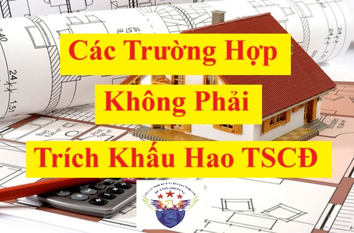

Quy định về các trường hợp không phải trích khấu hao TSCĐ theo Thông tư 45/2013/TT-BTC và Thông tư 147/2016/TT-BTC, Thông tư 99/2025/TT-BTC
Theo quy định tại khoản 1 điều 9 của Thông tư 45/2013/TT-BTC hướng dẫn về chế độ quản lý, sử dụng và trích khấu hao tài sản cố định.
Điều 9. Nguyên tắc trích khấu hao TSCĐ:
1. Tất cả TSCĐ hiện có của doanh nghiệp đều phải trích khấu hao, trừ những TSCĐ sau đây:
- TSCĐ đã khấu hao hết giá trị nhưng vẫn đang sử dụng vào hoạt động sản xuất kinh doanh.
- TSCĐ khấu hao chưa hết bị mất.
- TSCĐ khác do doanh nghiệp quản lý mà không thuộc quyền sở hữu của doanh nghiệp (trừ TSCĐ thuê tài chính).
- TSCĐ không được quản lý, theo dõi, hạch toán trong sổ sách kế toán của doanh nghiệp.
- TSCĐ sử dụng trong các hoạt động phúc lợi phục vụ người lao động của doanh nghiệp (trừ các TSCĐ phục vụ cho người lao động làm việc tại doanh nghiệp như: nhà nghỉ giữa ca, nhà ăn giữa ca, nhà thay quần áo, nhà vệ sinh, bể chứa nước sạch, nhà để xe, phòng hoặc trạm y tế để khám chữa bệnh, xe đưa đón người lao động, cơ sở đào tạo, dạy nghề, nhà ở cho người lao động do doanh nghiệp đầu tư xây dựng).
- TSCĐ từ nguồn viện trợ không hoàn lại sau khi được cơ quan có thẩm quyền bàn giao cho doanh nghiệp để phục vụ công tác nghiên cứu khoa học.
- TSCĐ vô hình là quyền sử dụng đất lâu dài có thu tiền sử dụng đất hoặc nhận chuyển nhượng quyền sử dụng đất lâu dài hợp pháp.
Theo quy định tại Khoản 4 Điều 1 Thông tư 147/2016/TT-BTC Sửa đổi, bổ sung một số điều của Thông tư số 45/2013/TT-BTC thì: Bổ sung vào cuối Khoản 1 Điều 9 như sau:
“ - Các tài sản cố định loại 6 được quy định tại Khoản 2 Điều 1 Thông tư này không phải trích khấu hao, chỉ mở sổ chi tiết theo dõi giá trị hao mòn hàng năm của từng tài sản và không được ghi giảm nguồn vốn hình thành tài sản.”
Vậy là: Các trường hợp không phải trích khấu hao tài sản cố định gồm có:
- TSCĐ đã khấu hao hết giá trị nhưng vẫn đang sử dụng vào hoạt động sản xuất kinh doanh.
- TSCĐ khấu hao chưa hết bị mất.
- TSCĐ khác do doanh nghiệp quản lý mà không thuộc quyền sở hữu của doanh nghiệp (trừ TSCĐ thuê tài chính).
- TSCĐ không được quản lý, theo dõi, hạch toán trong sổ sách kế toán của doanh nghiệp.
- TSCĐ sử dụng trong các hoạt động phúc lợi phục vụ người lao động của doanh nghiệp (trừ các TSCĐ phục vụ cho người lao động làm việc tại doanh nghiệp như: nhà nghỉ giữa ca, nhà ăn giữa ca, nhà thay quần áo, nhà vệ sinh, bể chứa nước sạch, nhà để xe, phòng hoặc trạm y tế để khám chữa bệnh, xe đưa đón người lao động, cơ sở đào tạo, dạy nghề, nhà ở cho người lao động do doanh nghiệp đầu tư xây dựng).
- TSCĐ từ nguồn viện trợ không hoàn lại sau khi được cơ quan có thẩm quyền bàn giao cho doanh nghiệp để phục vụ công tác nghiên cứu khoa học.
- TSCĐ vô hình là quyền sử dụng đất lâu dài có thu tiền sử dụng đất hoặc nhận chuyển nhượng quyền sử dụng đất lâu dài hợp pháp.
- Các tài sản cố định là kết cấu hạ tầng, có giá trị lớn do Nhà nước đầu tư xây dựng từ nguồn ngân sách nhà nước giao cho các tổ chức kinh tế quản lý, khai thác, sử dụng:
+ Tài sản cố định là máy móc thiết bị, dây chuyền sản xuất, tài sản được xây đúc bằng bê tông và bằng đất của các công trình trực tiếp phục vụ tưới nước, tiêu nước (như hồ, đập, kênh, mương); Máy bơm nước từ 8.000 m3/giờ trở lên cùng với vật kiến trúc để sử dụng vận hành công trình giao cho các công ty trách nhiệm hữu hạn một thành viên do Nhà nước sở hữu 100% vốn điều lệ làm nhiệm vụ quản lý, khai thác công trình thủy lợi để tổ chức sản xuất kinh doanh cung ứng dịch vụ công ích;
+ Tài sản cố định là công trình kết cấu, hạ tầng khu công nghiệp do Nhà nước đầu tư để sử dụng chung của khu công nghiệp như: Đường nội bộ, thảm cỏ, cây xanh, hệ thống chiếu sáng, hệ thống thoát nước và xử lý nước thải...;
+ Tài sản cố định là hạ tầng đường sắt, đường sắt đô thị (đường hầm, kết cấu trên cao, đường ray...).
Theo điểm đ Khoản 2 Điều 4 của Thông tư số 45/2013/TT-BTC thì:
đ) TSCĐ vô hình là quyền sử dụng đất:
- TSCĐ vô hình là quyền sử dụng đất bao gồm:
+ Quyền sử dụng đất được nhà nước giao có thu tiền sử dụng đất hoặc nhận chuyển nhượng quyền sử dụng đất hợp pháp (bao gồm quyền sử dụng đất có thời hạn, quyền sử dụng đất không thời hạn).
+ Quyền sử dụng đất thuê trước ngày có hiệu lực của Luật Đất đai năm 2003 mà đã trả tiền thuê đất cho cả thời gian thuê hoặc đã trả trước tiền thuê đất cho nhiều năm mà thời hạn thuê đất đã được trả tiền còn lại ít nhất là năm năm và được cơ quan có thẩm quyền cấp giấy chứng nhận quyền sử dụng đất.
Nguyên giá TSCĐ là quyền sử dụng đất được xác định là toàn bộ khoản tiền chi ra để có quyền sử dụng đất hợp pháp cộng (+) các chi phí cho đền bù giải phóng mặt bằng, san lấp mặt bằng, lệ phí trước bạ (không bao gồm các chi phí chi ra để xây dựng các công trình trên đất); hoặc là giá trị quyền sử dụng đất nhận góp vốn.
- Quyền sử dụng đất không ghi nhận là TSCĐ vô hình gồm:
+ Quyền sử dụng đất được Nhà nước giao không thu tiền sử dụng đất.
+ Thuê đất trả tiền thuê một lần cho cả thời gian thuê (thời gian thuê đất sau ngày có hiệu lực thi hành của Luật đất đai năm 2003, không được cấp giấy chứng nhận quyền sử dụng đất) thì tiền thuê đất được phân bổ dần vào chi phí kinh doanh theo số năm thuê đất.
+ Thuê đất trả tiền thuê hàng năm thì tiền thuê đất được hạch toán vào chi phí kinh doanh trong kỳ tương ứng số tiền thuê đất trả hàng năm.
- Đối với các loại tài sản là nhà, đất đai để bán, để kinh doanh của công ty kinh doanh bất động sản thì doanh nghiệp không được hạch toán là TSCĐ và không được trích khấu hao.
và Nội dung này được sửa đổi bởi Điều 2 Thông tư 28/2017/TT-BTC có hiệu lực từ ngày 26/05/2017 như sau:
Theo nguyên tắc kế toán của tài khoản 214 tại Thông tư 99/2025/TT-BTC thì:
Điều 2. Sửa đổi, bổ sung gạch đầu dòng thứ 3 Điểm đ Khoản 2 Điều 4 Thông tư số 45/2013/TT-BTC ngày 25 tháng 4 năm 2013 của Bộ Tài chính hướng dẫn chế độ quản lý, sử dụng và trích khấu hao tài sản cố định như sau:
“- Đối với các tài sản là nhà hỗn hợp vừa dùng phục vụ hoạt động sản xuất kinh doanh của doanh nghiệp, vừa dùng để bán hoặc cho thuê theo quy định của pháp luật thì doanh nghiệp phải xác định và hạch toán riêng phần giá trị của nhà hỗn hợp theo từng mục đích sử dụng, cụ thể như sau:
Đối với phần giá trị tài sản (diện tích) tòa nhà hỗn hợp dùng để phục vụ hoạt động sản xuất kinh doanh của doanh nghiệp và dùng để cho thuê (trừ trường hợp cho thuê tài chính): doanh nghiệp thực hiện ghi nhận giá trị của phần tài sản (diện tích) là tài sản cố định, quản lý, sử dụng và trích khấu hao tài sản cố định theo quy định.
Đối với phần giá trị tài sản (diện tích) trong tòa nhà hỗn hợp dùng để bán thì doanh nghiệp không được hạch toán là tài sản cố định và không được trích khấu hao và theo dõi như một tài sản để bán.
Tiêu thức để xác định giá trị từng loại tài sản và phân bổ khấu hao tài sản đối với từng mục đích sử dụng được căn cứ vào tỷ trọng giá trị của từng phần diện tích theo từng mục đích sử dụng trên giá trị quyết toán công trình; hoặc căn cứ vào diện tích thực tế sử dụng theo từng mục đích sử dụng để hạch toán.
Đối với các doanh nghiệp có nhà hỗn hợp mà không xác định tách riêng được phần giá trị tài sản (diện tích) phục vụ cho hoạt động sản xuất kinh doanh của doanh nghiệp, vừa để bán, để cho thuê thì doanh nghiệp không hạch toán toàn bộ phần giá trị tài sản (diện tích) này là tài sản cố định và không được trích khấu hao theo quy định.
Đối với các tài sản được dùng chung liên quan đến công trình nhà hỗn hợp như sân chơi, đường đi, nhà để xe việc xác định giá trị của từng loại tài sản và giá trị khấu hao các tài sản dùng chung cũng được phân bổ theo tiêu thức để xác định giá trị từng loại tài sản và phân bổ khấu hao nhà hỗn hợp”.
TÀI KHOẢN 214 - HAO MÒN TÀI SẢN CỐ ĐỊNH
1. Nguyên tắc kế toán
a) Tài khoản này dùng để phản ánh tình hình tăng, giảm giá trị hao mòn và giá trị hao mòn lũy kế của các loại TSCĐ và bất động sản đầu tư (BĐSĐT) trong quá trình sử dụng do trích khấu hao TSCĐ, BĐSĐT và những khoản tăng, giảm hao mòn khác của TSCĐ, BĐSĐT.
b) Về nguyên tắc, mọi TSCĐ, BĐSĐT của doanh nghiệp liên quan đến hoạt động sản xuất, kinh doanh (bao gồm cả tài sản chưa dùng, không cần dùng, không dùng được chờ thanh lý, nhượng bán,...) hoặc cho thuê (trừ khi đã khấu hao hết) đều phải trích khấu hao theo quy định hiện hành. Khấu hao TSCĐ, BĐSĐT dùng trong sản xuất, kinh doanh hạch toán vào chi phí sản xuất, kinh doanh trong kỳ; khấu hao TSCĐ dùng cho hoạt động đầu tư XDCB hạch toán vào chi phí đầu tư XDCB. Các trường hợp đặc biệt không phải trích khấu hao (như TSCĐ dự trữ, TSCĐ dùng chung cho xã hội,...), doanh nghiệp phải thực hiện theo quy định của pháp luật hiện hành. Đối với TSCĐ dùng cho mục đích phúc lợi thì không phải trích khấu hao tính vào chi phí sản xuất, kinh doanh mà chỉ tính hao mòn TSCĐ và hạch toán giảm Quỹ phúc lợi đã hình thành TSCĐ đó.
